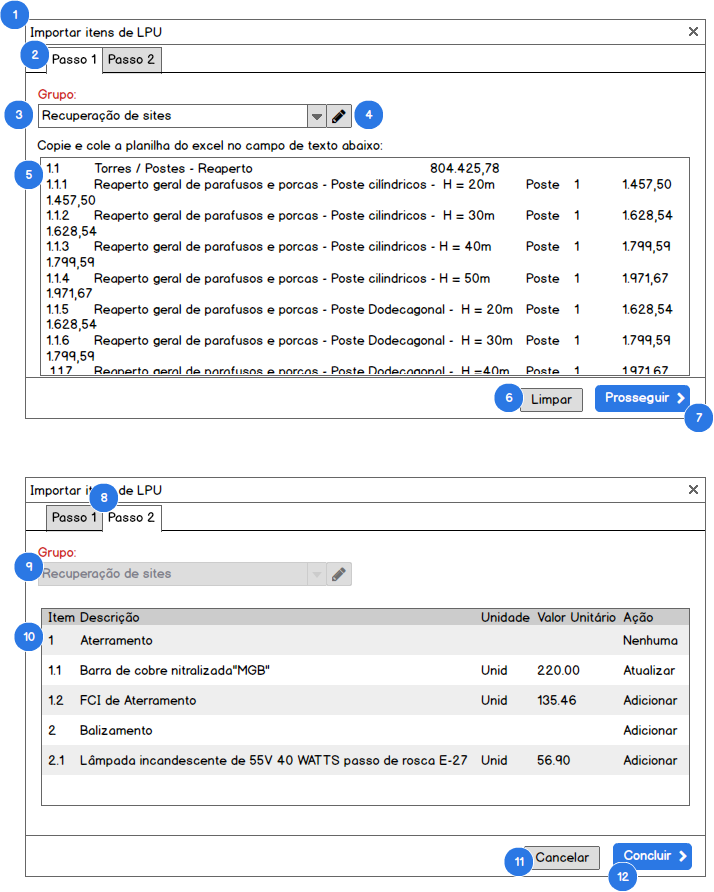

Funcionalidade: Importar itens de LPU#
Como usuário com perfil (1. Diretor, 2. Gerente) no SisGeop, eu quero importar a lista de itens de LPU diretamente a partir de um arquivo do Excel.
PROTÓTIPO#

Contexto
- Para acessar essa funcionalidade o usuário aciona o botão Importar itens a partir de qualquer tela relacionada;
- O sistema deverá abrir uma janela modal para a importação dos itens de LPU a partir de uma planilha do excel;
DETALHAMENTO DAS FUNCIONALIDADES#
1. JANELA DE IMPORTAÇÃO#
QUANDO o usuário acionar o botão Importar itens a partir de qualquer tela relacionada
ENTÃO o sistema exibirá a janela modal para a importação dos itens de LPU a partir de uma planilha do excel
2. ABA PASSO 1#
QUANDO a janela de importação de itens de LPU for aberta pelo sistema
ENTÃO o sistema irá ativar a primeira Aba da janela Passo 1
E o usuário deverá preencher os campos básicos para prosseguir com a importação
3. SELEÇÃO DO GRUPO DE ITENS#
QUANDO o usuário clicar no combo Grupo de item
ENTÃO o sistema deverá carregar a lista de Grupos de itens cadastrados no SisGeop
QUANDO o usuário selecionar um grupo da lista
ENTÃO o sistema irá definir este grupo como padrão para vinculação com os itens a serem importados
4. GERENCIAR GRUPOS DE ITENS#
QUANDO o usuário clicar no botão Gerenciar grupos de itens
ENTÃO o sistema aciona a funcionalidade Gerenciar grupos de itens
5. CAMPO DE TEXTO PARA COLAR O CONTEÚDO DA PLANILHA#
QUANDO o usuário selecionar o conteúdo de uma planilha excel de itens de LPU
E copiar o seu conteúdo através de Ctrl + C ou do menu de contexto Editar > Copiar
ENTÃO o usuário deverá colar o conteúdo, copiado dentro do campo de texto pressionando Ctrl + V ou do menu de contexto Editar > Colar
6. LIMPAR FORMULÁRIO#
QUANDO o usuário clicar no botão Limpar
ENTÃO o sistema irá exibir uma mensagem de confirmação ao usuário com o seguinte texto "Limpar formulário?
6.1 Confirmar limpeza do formulário#
CASO o usuário clique no botão Sim
ENTÃO o sistema limpa o formulário de importação
E oculta a mensagem de confirmação
6.2 Cancelar limpeza do formulário#
CASO o usuário clique no botão Não
ENTÃO o sistema oculta a mensagem de confirmação
E cancela a limpeza do formulário
7. PROSSEGUIR COM IMPORTAÇÃO#
QUANDO o usuário clicar no botão Prosseguir
ENTÃO o sistema efetua o processamento do conteúdo colado da planilha
E valida o conteúdo da planilha
7.1 Planilha com conteúdo inválido#
CASO a planilha colada pelo usuário esteja com o formato inválido, faltando informações ou colunas a mais
ENTÃO o sistema exibe a mensagem "O conteúdo colado está no formato incorreto. Favor verificar se existem as colunas: Item, Descrição, Unidade e Valor unitário"
7.2 Planilha com conteúdo válido#
CASO a planilha colada pelo usuário seja válida
ENTÃO o sistema prossegue para o passo 2 da importação
8. ABA PASSO 2#
A aba Passo 2 será o passo final do processo de importação da lista de itens de LPU.
9. CAMPO DE SELEÇÃO DE GRUPOS DE ITENS#
O campo de seleção de grupos de itens estará desabilitado na aba Passo 2 e não será permitida a sua alteração
10. LISTA DE ITENS A SEREM IMPORTADOS#
A lista de itens a serem importados deverá exibir a relação de todos os itens copiados da planilha do excel, incluindo subgrupos de itens identificados e processados. A lista deverá ser exibida com as colunas identificadas no protótipo.
| Coluna | Descrição |
|---|---|
| Item | Código do item a ser importado |
| Descrição | Descrição do item a ser importado |
| Unidade | Unidade de medida do item a ser importado |
| Valor unitário | Valor unitário do item a ser importado |
| Ação | Ação que o sistema irá realizar sobre o item na importação. |
Ações possíveis:
| Ação | Descrição |
|---|---|
| Adicionar | O item não existe na lista de LPUs e será adicionado |
| Atualizar | O item já existe na lista de LPUs e será atualizado |
| Nenhuma | O item já existe na lista de LPUs e não tem nenhuma informação para ser atualizada |
11. CANCELAR IMPORTAÇÃO#
QUANDO o usuário clicar no botão Cancelar
ENTÃO o sistema exibe a mensagem "Deseja realmente cancelar a importação?"
11.1 Confirmar cancelamento da importação#
CASO o usuário clique no botão Sim
ENTÃO o sistema fecha a janela de importação de itens de LPU
11.2 Cancelar cancelamento da importação#
CASO o usuário clique no botão Não
ENTÃO o sistema fecha a mensagem de confirmação
E não oculta a janela de importação de itens de LPU
12. CONCLUIR IMPORTAÇÃO#
QUANDO o usuário clicar no botão Concluir
ENTÃO o sistema processa a lista de LPUs e insere e atualiza os itens de acordo com a ação identificada
E exibe a mensagem "Planilha de itens importada com sucesso"
E fecha a janela de importação de itens de LPU